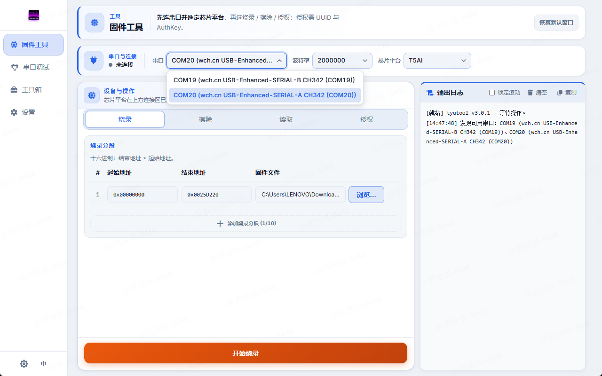

快速上手
本页带你从「下载了 App」一路走到「成功烧录第一台设备」。整条路径是线性的，按顺序读完即可完成第一次烧录，预计 5–10 分钟。
先读
如果你完全没接触过固件刷写，先看 基础概念。
前置准备
动手前请确认以下清单均已就绪——烧录需要软硬件齐备，缺一不可。
- 一台受支持的设备：tyutool 面向涂鸦生态IoT 设备，具体支持的芯片型号见固件烧录页。
- 一个 USB 转串口适配器：正确接到设备的 UART（TX/RX/GND，视情况再接电源）。接线时必须交叉：电脑端 TX 接设备端 RX，反之亦然。
- 设备进入下载/烧录模式：不同设备进入方式各异（按键组合、短接焊点、上电时序等）。
注意
接线方式与进入下载模式的方法是设备相关的，没有通用步骤——请先查阅你的设备说明或常见问题。tyutool 无法替你把设备切进下载模式，这一步必须由你手动完成；设备没进下载模式时，tyutool 会一直等待握手并最终超时。相关概念（UART / 下载模式 / 波特率）见基础概念。
下载与安装
tyutool 为 Windows、macOS、Linux 提供预编译安装包。请到项目的 README 下载表，按你的操作系统选择对应版本，下载后照常规方式安装即可。各平台的常见坑点如下（完整说明见常见问题）。
macOS 串口权限
macOS 默认禁止普通用户访问串口设备。请把当前用户加入
dialout 组：sudo dseditgroup -o edit -a $USER -t user dialout，然后注销重新登录生效。详见 常见问题。
Linux 白屏
部分 Linux 桌面下，tyutool 启动后窗口空白不渲染。在启动命令前加上该环境变量可绕过：
WEBKIT_DISABLE_COMPOSITING_MODE=1 ./tyutool-gui_linux_x86_64_appimage_x.x.x.AppImage。详见 常见问题。
小提示
上面这些小坑都属于环境问题，与 tyutool 本身无关；解决后通常一劳永逸，之后不会再遇到。
首次启动
安装完成后启动 tyutool，主窗口分为两部分：左侧是导航侧边栏，右侧是当前功能的工作区。侧边栏提供四个主要入口：
- Flash（固件烧录）——烧录、读取、擦除 flash 芯片。
- Serial Debug（串口调试）——实时收发串口数据、查看设备日志。
- Toolbox（工具箱）——辅助工具集合。
- Settings（设置）——配置路径、日志级别等应用选项。
本页剩下的步骤都在 Flash 页完成——它是你第一次烧录时唯一需要关心的入口。

连接设备
接线检查无误、设备已进入下载模式后，按下面顺序在 tyutool 里建立连接。
- 把 USB 转串口适配器插到电脑的 USB 口。
- 在 tyutool 的 Flash 页，点击串口下拉框。
- 在列出的端口里选择你的适配器（如
COM3//dev/ttyUSB0//dev/cu.SLAB_USBtoUART）。 - 留意旁边的状态点：绿色表示已连接并就绪；灰色或红色表示未连上或握手失败。
选好端口后，波特率与芯片型号会由 tyutool 自动建议一个合理默认值，多数情况下可直接采用；需要调整时也可手动覆盖。
小提示
如果下拉框里看不到任何端口，先确认适配器已插好、驱动已装（CH340/CP2102/FT232），并检查 macOS/Linux 的串口访问权限（见上方安装小节）。
完成第一次烧录
设备连上后，烧录本身的操作非常简短。按顺序走完以下步骤即可写入第一份固件。
- 选择芯片型号：在 Flash 页顶部选择你设备对应的芯片（型号决定了通信协议与地址布局，选错会烧录失败）。
- 选择固件：切到 Flash 标签，点击选择固件文件，挑一份
.bin固件。 - 确认地址：选好固件后，写入地址会自动填入默认值，一般无需修改。
- 点击烧录：点击 Flash 按钮开始写入。
- 观察进度：盯着进度条与下方日志，正常会一路推进到 100%。
- 等待重启：写入完成后设备会自动重启并运行新固件——到这里你的第一次烧录就完成了。
各步骤的进阶选项（地址微调、擦除策略、校验、保存日志等）请见固件烧录页。
下一步
恭喜完成第一次烧录！接下来可以按需求深入各个功能页：